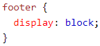

Footer - <footer>
Footer tags define a footer for a document or section
You can have multiple footers on one page.
Footers usually contain:
- Authorship info
- Copyright info
- Contact info(inside of <address> tags
- Sitemap
- Back to top links
- Related documents
Examples:
Default Styling:

Attributes:
The global and event attributes are supported.